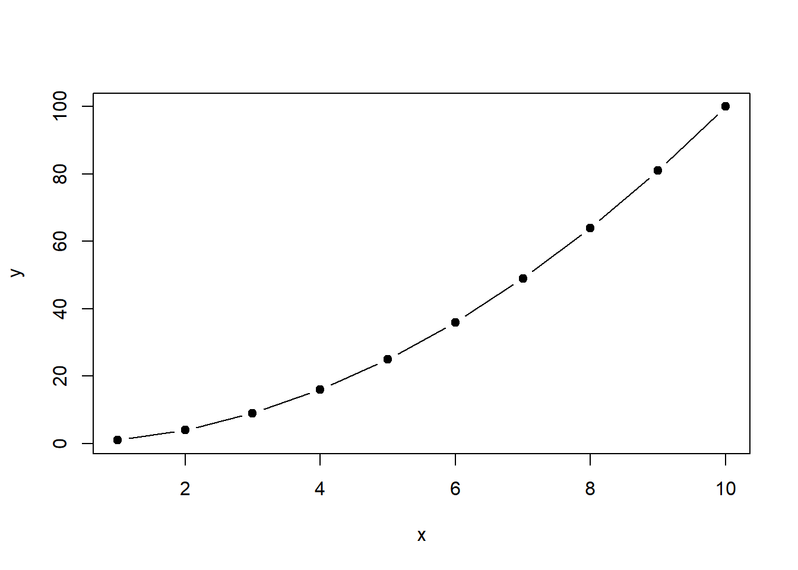
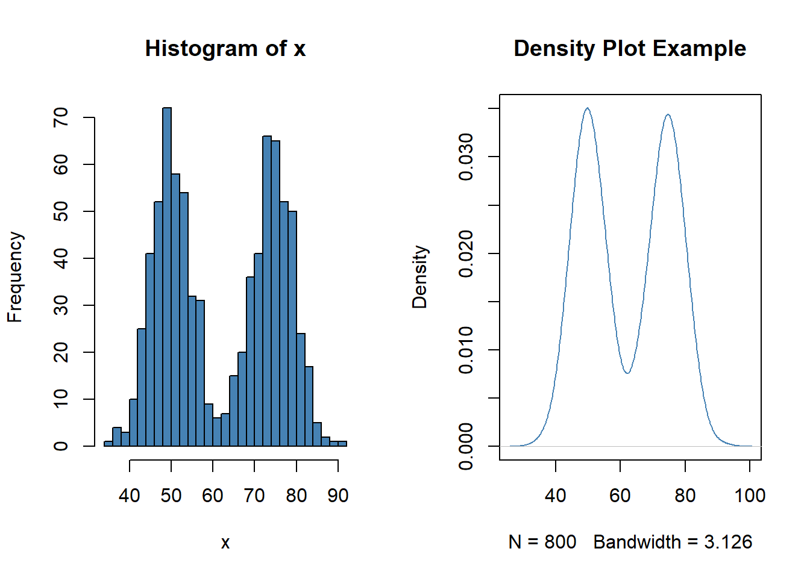
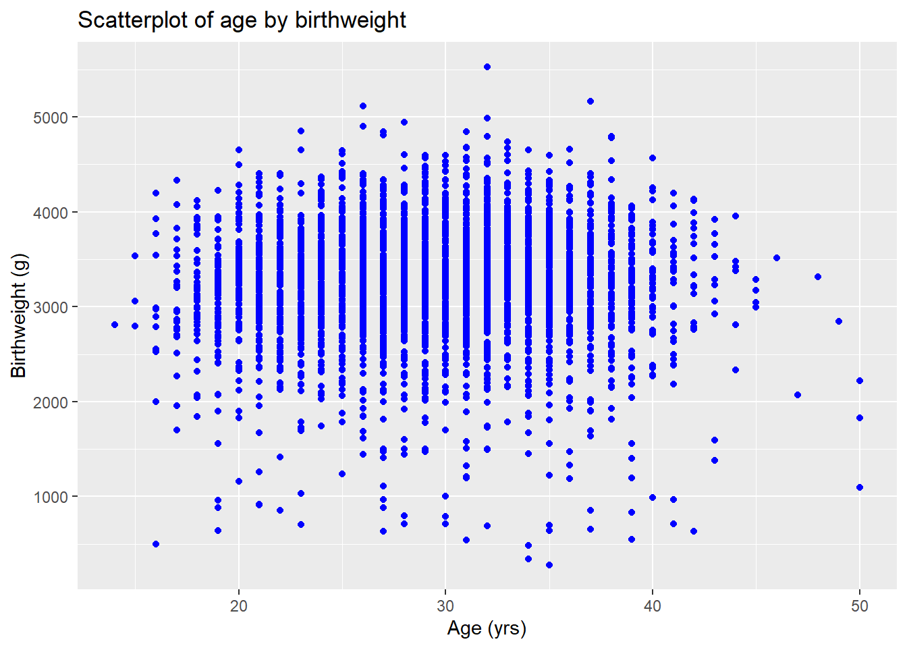
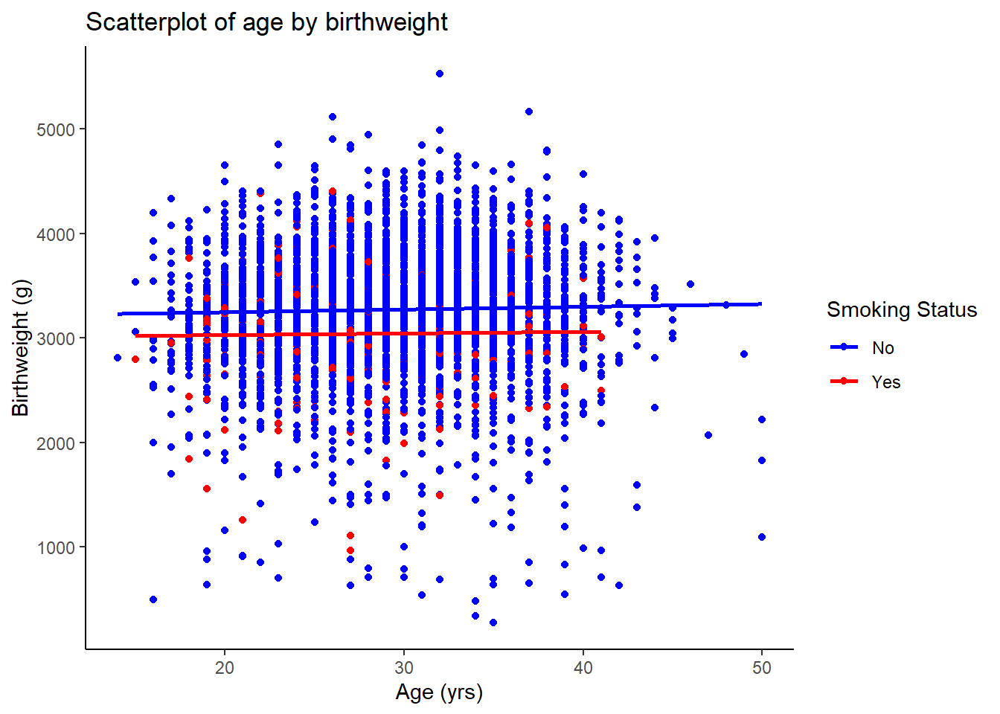
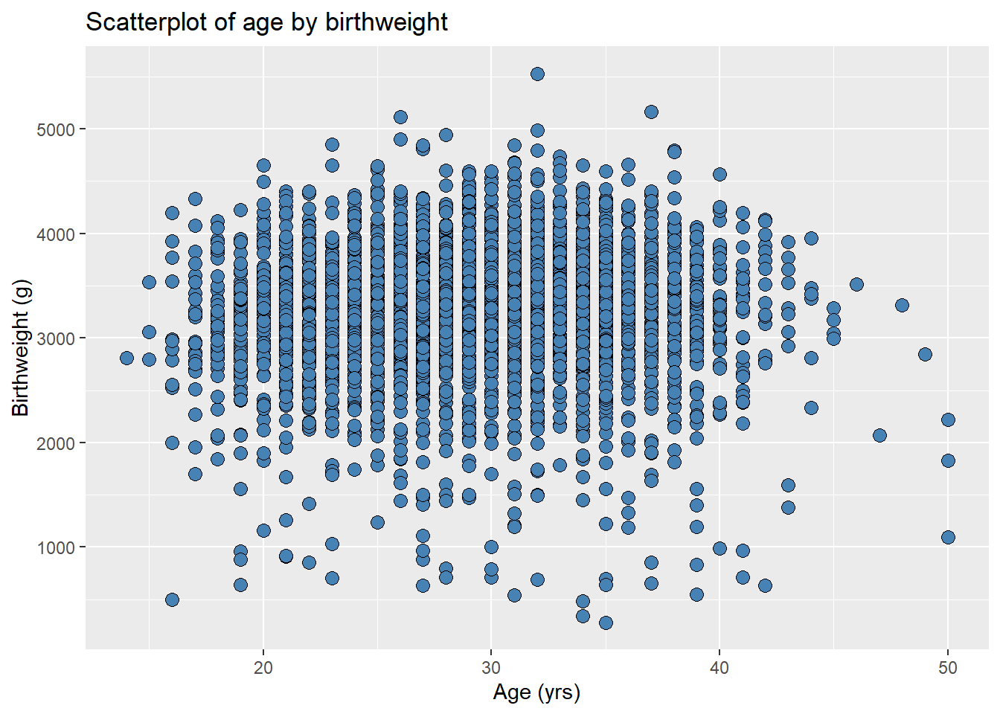
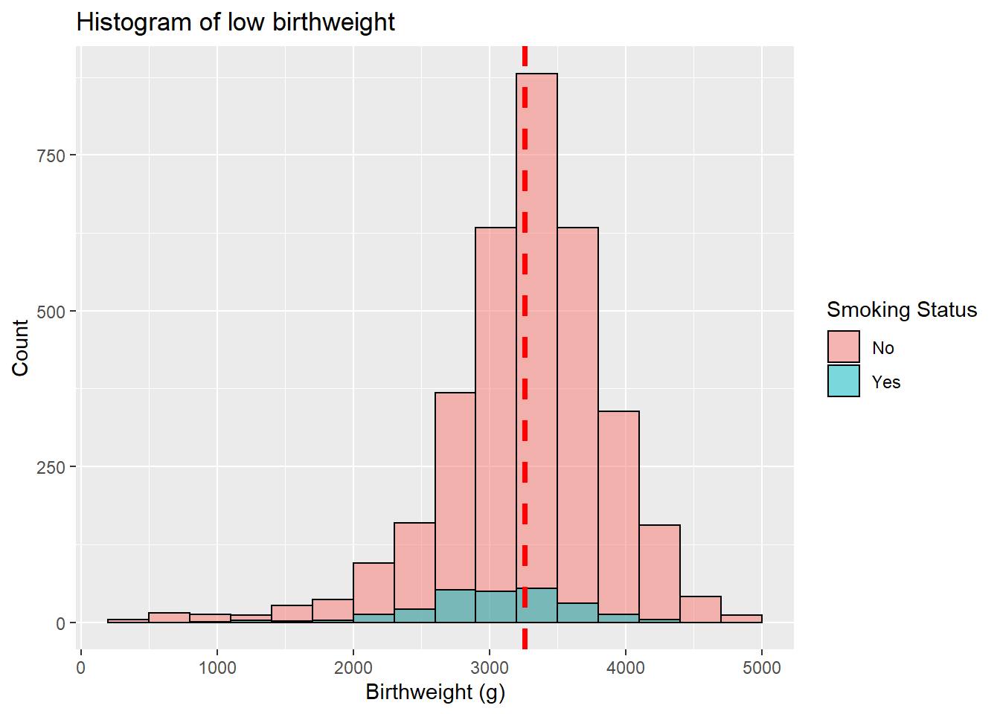
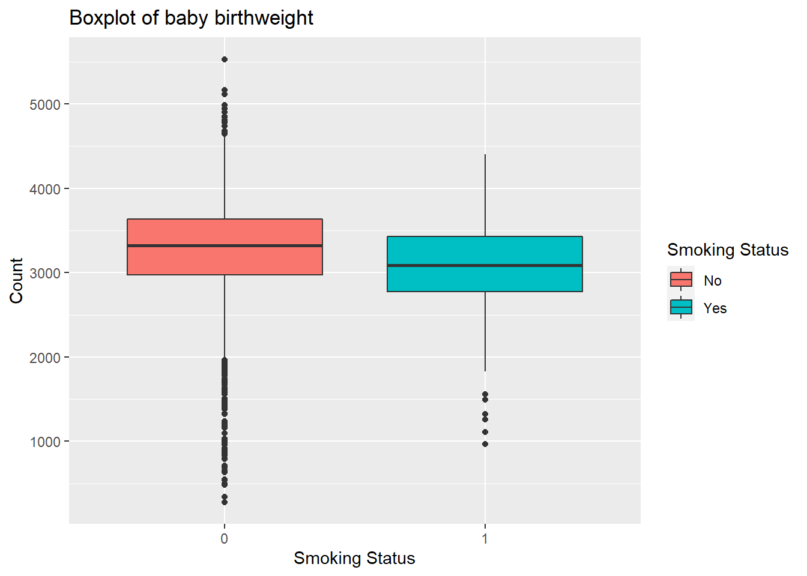
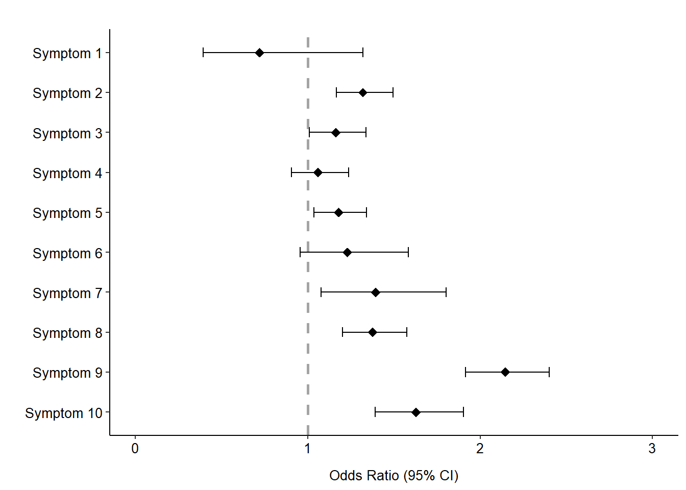
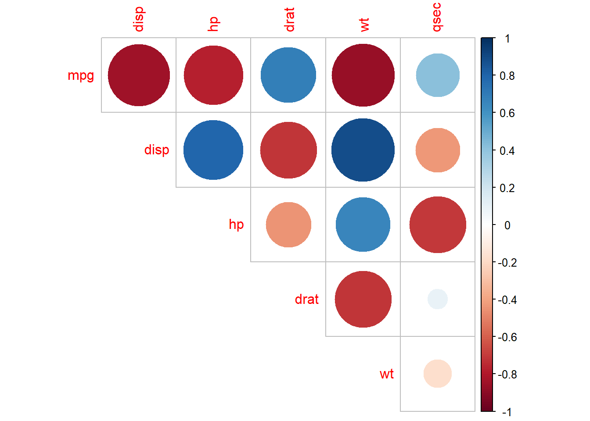

3 Data Visualization
R is a great tool for data visualization. In a lot of situations, it is highly commended for having the tools to provide good looking plots over other coding languages.
Basic Plots
R provides functions from the base package to allow visualizing some data. To draw some plots, you can use the plot() function and takes in the parameters for the x-axis and y-axis. These will be briefly explained or provided a brief code example since there are stronger, and more visually pleasing visualization options available!
Scatterplots
Another argument that the function plot can take in is for the type argument. The type can be one of the following:
p= Points (this is the default type for plots)l= Linesb= For both; points are connected by a lineo= For both “overplotted”h= For histogram like vertical liness= For stair stepsn= For no plotting
x <- c(1:10)
y <- 2 * x
par(mfrow = c(1, 2)) # Function to output side-by-side plots 1 row and 2 columns format
plot(x, y)
plot(x, y, type = "l")plot(x, y, type = "b")
plot(x, y, type = "h")The plot() function can take in further arguments for various features of drawing a plot in R. Some of the important ones are:
main= Main Title / Title of the Plotxlab= X-axis titleylab= Y-axis titlepch= Marker Style (shape and fill or no fill)frame= Border around the plotcol= Change the color fo the markers
pch is the option for various marker styles. Here is a list of the various marker types that you can use. These numbers can also be used with the ggplot2 plots as well.

And to plot from one of the data columns read into R, the column(s) of interest can be called using the appropriate notation.
plot(x = low_birth_all$birthMonth, y = low_birth_all$prenatalVisits,
main = "Number of Prenatal Visits by Month",
xlab = "Month", ylab = "Number of Prenatal Visits", pch = 19, col = "blue")Line Plots
Using the plot() function, the type=l argument or type=b can be used to draw line plots.
# Want to plot just the non-smokers
x <- c(1:10)
y <- x^2
plot(x = x, y = y, type = "b", pch = 19)
Bar Plots
To draw the barplots using the base R package, the following can be done:
low_bwt_table <- low_birth_all %>%
group_by(birthMonth) %>%
summarize(prenatalVisits = n())
barplot(height = low_bwt_table$prenatalVisits, names.arg = unique(low_bwt_table$birthMonth))Notice that the height is for the y-axis and the width stands for the x-axis here.
Histogram and Density Plots
To look at the distribution of the data for certain values, histograms and density plots are also useful. The following is an example of the basic method to do so:
set.seed(42)
x <- c(rnorm(400, mean=50, sd=5), rnorm(400, mean=75, sd=5))
dens <- density(x)
par(mfrow = c(1, 2))
hist(x, col = "steelblue", breaks = 30)
plot(dens, col = "steelblue", main = "Density Plot Example")
Boxplots
For a different form of distribution visualization, a boxplot is also popular. The following is an example of the basic method to do so:
boxplot(prenatalVisits ~ birthMonth, data = low_birth_all)However, although these plots are relatively “simple” to code, they have limited capabilities design-wise. For more design capabilities, you can use ggplot2 and plotly packages.
ggplot2 Plots
The ggplot2 package is commonly used for data visualization in R. Although base plots can be visualized in a quick and easy manner, they are not the most aesthetic of plots. The ggplot2 package provides more aesthetic options and more flexibility. The ggplot2 plot requires three elements:
- data
- aesthetic mapping using the
aes()argument- This helps to specify x, y variables, alongside the color and fill (these are determined by categorical values).
- at least one layer created with the
geomfunction- This specifies the type of plot that gets generated.
geom_point= Scatter Plotgeom_density= Density Plotgeom_line= Line Plotgeom_histogram= Histogramgeom_bar= Bar plotgeom_smooth= Smooth line such as regression linegeom_text= Text annotationsgeom_boxplot= Box plotgeom_violin= Violin plotgeom_dotplot= Dot plot
- This specifies the type of plot that gets generated.
There are several more geom layers available in ggplot2 that has not been listed above. These can be explored further online. For this guide, the most commonly plotted geom layers will be demonstrated.
In ggplot2, to draw a plot, the first line of code always starts with the ggplot(). This function requires two of the three components mentioned before: data and the aesthetic mapping. In the aesthetic mapping, you can type in the column names for the x and y-axes. These column names do not require quotation marks. There are two more key other features of aesthetic mapping available: color and fill.
The options for color and fill are optional features, but these are useful when you want to use color to represent unique categorical values. color and fill might sound similar option-wise, but there is a slight difference:
coloroption colors the plot type for each unique categorical value- In certain options, the color option is more for the outline color in the geom layer.
filloption colors the plot type for each unique categorical value but actually fills in the geom layer.
Using either color or fill or both, this automatically generates a legend to the right-hand side of the plot in ggplot2. Doing so allows the user to know which color is assigned to which value. To learn more about dealing with color and fill in R, click here.
The structure of the ggplots typically first call the ggplot() function, which is followed up by the + symbol. After, the geom layer of interest can be added. To add more layers or change the way elements look, keep adding the + symbol after you finish that line of code.
Here is an example of ggplot code in R:
ggplot(data = mydata, aes(x = x_var_name, y = y_var_name)) +
geom_point()One other thing to note is that there are various other features available for drawing plots through ggplot2 package. You are able to manually change colors instead of using the default palettes, change the background design of the plot, or the overall plot theme. This will be highlighted in later sections of this chapter.
Scatterplots
The scatter plot shows the relationship/trend between two continuous (numerical) variables.
Example: Draw the scatter plot of age by birthweight bwt.
ggplot(low_birth_all, aes(x = age, y = bwt)) +
geom_point(color = "blue") + # Color the points blue
labs(title = "Scatterplot of age by birthweight") + # Add in a title
labs(x = "Age (yrs)", y = "Birthweight (g)") # Relabel the x and y-axes titles
When you plot a scatter plot in R, you also have the option drawing a regression line using the geom_smooth() function. This is typically used to draw a straight line between the x and y-axes.
ggplot(low_birth_all, aes(x = age, y = bwt)) +
geom_point(color = "blue") +
geom_smooth(method = "lm", se = T, col = 2) + # Draw a straight line and add in the standard error line
labs(title = "Scatterplot of age by birthweight", # Add title
x = "Age (yrs)", y = "Birthweight (g)") # Relabel x and y-axes titlesWithin the geom_point() function, there are multiple options that you could use to help advance your visualization. Color and fill arguments can be done inside the ggplot() function, and highly suggested. But it can also be done inside the geom_point function if wished. However, the point shape, size, and transparency can be set in the geom_point function.
This information can help illustrate how different groups within a categorical variable are distributed across the other two features of interest.
Example: Overlaid scatterplots and regression lines by smoke status.
ggplot(low_birth_all, aes(x=age, y=bwt, color = factor(smoke))) + # Set color to vary on smoking status
geom_point() + # Draw scatter plot
geom_smooth(method = "lm", se=F, aes(group = factor(smoke))) + # Draw regression lines by smoking
labs(title = "Scatterplot of age by birthweight", # Add title and relabel axes titles
x = "Age (yrs)", y = "Birthweight (g)") +
scale_color_manual(name = "Smoking Status", # Change the legend title
labels = c("No", "Yes"), # Re-code the values 0=no; 1= yes for smoking status
values = c("blue", "red")) + # Specify what colors each value should be.
theme_classic() # change theme from default to classic.
To change the shape of the points, use the shape = argument inside the geom_point function. The shape argument takes in numbers from the image above with the various pch options. For colored and fill options, you can use numbers 15 through 25.
ggplot(low_birth_all, aes(x=age, y=bwt, color = factor(smoke))) + # Set color to vary on smoking status
geom_point(aes(shape = factor(smoke))) + # Draw scatter plot
labs(title = "Scatterplot of age by birthweight", # Add title and relabel axes titles
x = "Age (yrs)", y = "Birthweight (g)") +
scale_shape_manual(name = "Smoking Status", # Change the legend title
labels = c("No", "Yes"), # Re-code the values 0 = no; 1 = yes
values = c(4, 19)) + # Specify what shapes each value should be
scale_color_manual(name = "Smoking Status", # Change the legend title
labels = c("No", "Yes"), # Re-code the values 0=no; 1= yes for smoking status
values = c("blue", "red")) + # Specify what colors each value should be.
theme_classic() # change theme from default to classic.One thing to note is that pch options 15 through 20 for shapes have the same fill color and border color, so you only need to define the color argument. However, pch options 21 through 25 have a separate border color and fill color option and you can set it so that they differ from each other. This can be demonstrated as the following:
ggplot(low_birth_all, aes(x = age, y = bwt)) +
geom_point(color = "black", fill = "steelblue", shape = 21) + # Color the points blue but line them black
labs(title = "Scatterplot of age by birthweight") + # Add in a title
labs(x = "Age (yrs)", y = "Birthweight (g)") # Relabel the x and y-axes titlesAnother option that you can use is to change the size of the markers/points of the plots. You can define this using the size = argument in geom_point() as portrayed below:
ggplot(low_birth_all, aes(x = age, y = bwt)) +
geom_point(color = "black", fill = "steelblue", shape = 21, size = 3) + # Change the size to 3 (bigger)
labs(title = "Scatterplot of age by birthweight") + # Add in a title
labs(x = "Age (yrs)", y = "Birthweight (g)") # Relabel the x and y-axes titles
This last option that might be of interest is the alpha argument. This argument deals with the “opacity” of the markers/graph element. The input is a decimal value that determines the transparency of points. If you would like to see points that may be overlapping each other, you can set the alpha to a value of 0.4 to 0.6 (commonly used values) for semi-transparent points.
ggplot(low_birth_all, aes(x = age, y = bwt)) +
geom_point(color = "black", fill = "steelblue", shape = 21, size = 2, alpha = 0.5) + # Set the point transparency to 0.5
labs(title = "Scatterplot of age by birthweight") + # Add in a title
labs(x = "Age (yrs)", y = "Birthweight (g)") # Relabel the x and y-axes titlesBarplots
Bar plots are typically used to display the count information of categorical data. In R, this is mostly done through geom_bar() function. This function makes the “height” of the bar (y-axis) proportional to the number of cases in each group (x-axis values).
- Essentially, this function does a calculation with the function called
stat_count()to count the number of cases of each group indicated by the x-axis.
This function works best if there is no “count” value in the data frame already.
Example: Bar plot of total number of participants by race.
ggplot(low_birth_all, aes(x = race, fill = race)) +
geom_bar() + # Draw Bar plot
ggtitle("Barplot of Number of People by Race") + # Add title
labs(x = "Race", y = "Number of Participants") + # Relabel the axes titles
theme_minimal() # Change plot themeHowever, this is the case only if each row is a unique participant like this data. If we wanted to represent the total value of a continuous variable instead of the count, then we can use the stat = "identity" argument.
- This allows you to not have to manually transform the data.
- All you have to do is specify the y-axis and set the argument to
stat = "identity".
For bar plots, you can also combine multiple bar plots into one by inputting the fill= argument in the aes() function. The default is set to “stack” the bars on top of each other, but if you wanted them side-by-side, add in the position = "dodge" argument within the geom_bar() function.
Example: bar plot of total number of prenatal visits for each race by smoking status
ggplot(low_birth_all, aes(x = race, y = prenatalVisits, fill = factor(smoke))) + # Add two different bars by smoke status
geom_bar(stat = "identity", position = "dodge") + # Draw total of prenatal Visits for y-axis and side-by-side bars
ggtitle("Barplot of Number of Prenatal Visits by Race") + # Add title
labs(x = "Race", y = "Number of Prenatal Visits") + # Relabel the x and y-axes titles
scale_fill_manual(name = "Smoking Status", labels = c("No", "Yes"), # Format the legend for the color of bars
values = c("blue", "red")) +
theme_minimal() # Change the theme of the plotThere is an alternative way to draw plots in ggplot2 and that is through the geom_col() function instead of the geom_bar() function.
- This function does not transform the data like
geom_bar()does. - If your data already contains a certain “count” data in a variable already, then this function should work better than the
geom_bar()function.- If it does not contain the count data, then you have to calculate it on your own end.
count_bwt <- low_birth_all %>% # Calculating the count of all unique races.
group_by(race) %>%
summarize(Count = n()) %>%
as.data.frame(.)
ggplot(count_bwt, aes(x = race, y = Count, fill = race)) +
geom_col() +
ggtitle("Barplot of Number of People by Race") + # Add title
labs(x = "Race", y = "Number of Participants") + # Relabel the axes titles
theme_minimal() # Change plot theme
Histogram
Histograms show the underlying frequency distribution of continuous data. In ggplot2, histograms plot with a default “bin” value of 30. To alter this, use the argument binwidth. This will override the bin value and adjust to the value you set. Sometimes, R will advise you to override their default, but it is up to your discretion to adjust this value.
Example: Histogram of the continuous variable birthweight bwt with a vertical red reference line added to show the mean birthweight
ggplot(low_birth_all, aes(x = bwt)) +
geom_histogram(col = "black", fill = "pink", breaks = seq(200, 5000, 300)) +
geom_vline(aes(xintercept = mean(bwt, na.rm = T)),
color = "red", linetype = "dashed", size = 1.25) +
labs(title = "Histogram of low birthweight",
x = "Birthweight (g)", y = "Count")You can also add multiple histograms in one plot by using the fill argument again. Here is an example:
Example: Histogram of the continuous variable birthweight bwt with a vertical red reference line added to show the mean birthweight.
ggplot(low_birth_all, aes(x=bwt, fill=factor(smoke))) + # Draw two histograms by smoke status
geom_histogram(binwidth = 0.5, alpha = 0.5, position = "identity", # alter binwidth and set transparency level
col = "black", breaks = seq(200, 5000, 300)) +
geom_vline(aes(xintercept = mean(bwt, na.rm = T)), color = "red", # Add the line at the mean birthweight value
linetype = "dashed", size = 1.25) +
labs(title = "Histogram of low birthweight", # Add title and relabel axes titles
x = "Birthweight (g)", y = "Count") +
scale_fill_discrete(name = "Smoking Status", labels = c("No", "Yes")) # Format the legend
Boxplots
Boxplots show the underlying distribution of continuous data based on the five number summary statistics: minimum, 1st quartile, median, 3rd quartile, and maximum. This takes in the categorical variable for the x-axis and the continuous variable for the y-axis.
Example: boxplots of bwt by smoke status
ggplot(low_birth_all, aes(x = factor(smoke), y = bwt, fill = factor(smoke))) +
geom_boxplot() +
labs(title = "Boxplot of baby birthweight",
x = "Smoking Status", y = "Count") +
scale_fill_discrete(name = "Smoking Status", labels = c("No", "Yes"))
In a similar fashion as before, you can plot multiple groups of barplots into one, singular plot by taking advantage of the fill argument.
Example: Compare race by smoke status with respect to birthweight bwt variable.
ggplot(low_birth_all, aes(x = race, y = bwt, fill = factor(smoke))) +
geom_boxplot() +
scale_fill_manual(values = c("blue", "red"),
labels = c("Non-Smokers", "Smokers")) +
labs(x = "Race", y = "Birthweight (g)") +
theme(legend.position = "top", legend.title = element_blank())Formatting Plots
Most of the common figure types have been covered. However, there is the issue of formatting ggplot2 plots, which can seem daunting with endless resources.
However, there are functions called facet_wrap() and facet_grid() that can assist you with separating out those combined plots into multiple ones to help visualize the distribution of your data side-by-side.
facet_wrap(): This will generate a grid of plots for the combination of variables that have values.facet_grid(): This will generate a grid of plots for each combination of values of variables that you specify, even if some plots are empty.
With this in mind, it is preferable to use facet_wrap() over facet_grid() unless you are doing very preliminary data exploration. Within the function, you can specify certain values, but you must designate the facet through by placing vars(variable_name) as the first element of the function.
If you want to designate the number of columns and/or rows for the grid of multiple plots, you can change the values by designating nrow= and ncol= inside the facet_wrap() function. Any other editing done within the theme() function you want to do affects all of the plots set in the grid because these are still outputted as a single graphic object in R.
Example: Compare race by smoke status with respect to birthweight bwt variable.
ggplot(low_birth_all, aes(x = factor(smoke), y = bwt, fill = factor(smoke))) +
geom_boxplot() +
scale_fill_manual(values = c("blue", "red"),
labels = c("Non-Smokers", "Smokers"),
name = "Smoking Status") +
labs(x = "Smoking Status", y = "Birthweight (g)") +
facet_wrap(vars(race))theme() function
This section is not covered in the course series, but here to help clarify any confusion that you may run into while coding in R.
In ggplot2, there is a function called theme() that you can use to do some additional plot formatting. For instance, you can adjust the spacing between the axes titles with the plot, align the title to the center of the plot, remove grid lines in the plot, and much more.
Below is some code that might help you as you write your own code to do data visualizations from one of the previous examples:
ggplot(low_birth_all, aes(x = age, y = bwt)) +
geom_point(color = "blue") +
geom_smooth(method = "lm", se = T, col = 2) +
labs(title = "Scatterplot of age by birthweight",
x = "Age (yrs)", y = "Birthweight (g)") +
theme(plot.title = element_text(hjust = 0.5, face = "bold", size = 11), # Center-align, bold font, and set font size to 11 for title
axis.title.x = element_text(margin = margin(t = 10, r=0, b=0, l=0)), # Add some space between the x-axis and its title
axis.title.y = element_text(margin = margin(t=0, r = 10, b=0, l=0)), # Add some space between the y-axis and its title
panel.grid.minor = element_blank(), # Hide the minor grid lines
legend.position = "none", # Hide the legend
)To learn more about the various elements that you can personally modify in ggplot2, read this documentation.
Other Plots
Forest Plot
Forest plots are visual representations of effect sizes and 95% confidence intervals (CI). It can be used to plot several variables of the same study or across studies (meta-analysis).
To draw this, there are various methods in R. But there is a way to manually do it in R through ggplot2. First, make sure to have a data that contains a list of items that you want to plot with their names, a column of Odds Ratio, and two separate columns with the lower and upper 95% confidence interval values for each one.
Once you have your data set, then you can draw your forest plot using these column values. The key point here is to take advantage of the geom_errorbarh() function, which lets you draw the confidence interval bounds. Another key function is the theme() function explained before, where you format how the figure looks.
Here is an example code of a sample data file:
forest_plot <- ggplot(or.df, aes(x = OR, y = Index)) +
geom_point(shape = 18, size = 3) +
geom_errorbarh(aes(xmin = Lower, xmax = Upper), height = 0.25) +
geom_vline(xintercept = 1, color = "gray29", linetype = "dashed", cex = 1, alpha = 0.5) +
scale_y_continuous(name = "", breaks = 1:10, labels = or.df$Symptom, trans = "reverse") +
xlab("Odds Ratio (95% CI)") +
ylab(" ") +
ggtitle(" ") +
theme_bw() +
xlim(c(0, 3)) +
theme(panel.border = element_blank(),
panel.background = element_blank(),
panel.grid.major = element_blank(),
panel.grid.minor = element_blank(),
plot.title = element_text(hjust = 0.5, face = "bold", size = 11),
axis.line = element_line(colour = "black"),
axis.text.y = element_text(size = 10, colour = "black"),
axis.text.x.bottom = element_text(size = 10, colour = "black"),
axis.title.x = element_text(size = 10, colour = "black", margin = margin(t = 10, r = 0, b = 0, l = 0)))
forest_plot
Correlation Matrix
- Correlation measures the strength of a (linear) association between two continuous variables.
- Correlation values range from -1 to +1:
- A correlation of -1 indicates a perfect negative correlation between two continuous variables.
- A correlation of +1 indicates a perfect positive correlation between two continuous variables.
You can calculate the correlations using the cor() function which comes with R. However, to plot a correlation matrix, you must use the function corrplot() from the package corrplot.
Example: use R built-in data mtcars to show linear correlations between several continuous car characteristics.
cor(mtcars[,c(1, 3:7)]) %>%
corrplot(method = "circle", type = "upper", diag = F)
Interactive Plots: Plotly
Recently interactive plots have started to surface in the realm of both Python and R. One such tool is the plotly package. The library allows you to either write a plot_ly() figure from scratch, or to transform your ggplot() into a plotly-like figure.
In plotly, the plot_ly() function requires the following elements:
- data
- x and y variable names
- plot type
- marker/trace
- This is similar to what we call the “geom” layer in ggplot.
But let’s say that you already wrote a figure using ggplot. No worries, just assign this to a variable name, and then put it inside the function ggplotly(). Doing so, you will see the interactive features pop up just like the plot_ly() function does.
There are additional features available for plotly figures:
- Hover (information from hover)
- Zoom in/out
- Download button
- Click/drag features
Although the two functions both generate an interactive plot, ggplotly() requires a ggplot figure as an input and builds that into an interactive one. To format the ggplot further, you must use the layout() function the way it is demonstrated from the plotly documentation.
Example: Draw a scatterplot of the iris dataset with Sepal.Length as the x-axis and the Petal.Length as the y-axis.
fig <- ggplot(iris, aes(x = Sepal.Length, y = Petal.Length)) +
geom_point(color = "blue")
ggplotly(fig)plot_ly(data = iris, x = ~Sepal.Length, y = ~Petal.Length, type = "scatter", mode = "markers")Example: Draw a scatter and line plot of World Health Organization’s dataset with Year as the x-axis and the Percent of Cause-Related Death Percent as the y-axis (color by country optional).
fig <- ggplot(ihd.df, aes(x = Year, y = Cause_Percent, color = Country)) +
geom_line() +
geom_point(aes(fill = Country,
text = paste("<b>Year:</b> ", Year, "<br>",
"<b>Country:</b> ", Country, "<br>",
"<b>Percent:</b> ", round(Cause_Percent, 2), "%", sep = "")),
shape = 21, color = "grey50", size = 3, alpha = 0.5) +
scale_x_continuous(breaks = ihd.df$Year, labels = ihd.df$Year) +
ylab("Percent of IHD Related Deaths (%)") +
ggtitle("Percent of IHD Related Deaths per Year by Country") +
theme_minimal() +
theme(legend.position = "none",
plot.title = element_text(hjust = 0.5))
fig <- ggplotly(fig, tooltip = "text") %>%
layout(yaxis = list(title = list(standoff = 20L)),
xaxis = list(title = list(standoff = 20L)))
figFor more plot options from plotly and more documentation, please go to plotly’s website.
Saving the Plot
In R, a graphics device is a tool that makes your plot appear within RStudio.
- A window on your computer (screen device)
- This is the most common place to “send” a plot
- Easy to copy/paste into your document
The file type options available to save your figure(s) are the following:
- PNG
- JPEG
These options provide better quality for journal articles and/or presentations.
Example: create a plot that gets saved in a PDF file:
pdf(file = "CorrMat.pdf") # Save the plot below as a PDF
par(mar = c(4, 5, 1, 1)) # Enlarge the dimension of the plot
cor(mtcars[,c(1, 3:7)]) %>% # Draw the plot
corrplot(method = "circle", type = "upper", diag = F)
dev.off() # Finish process and turn it off.